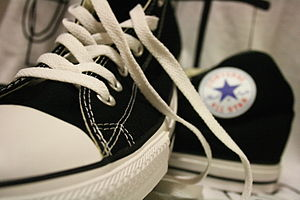

Converse
Converse es una compañía estadounidense de ropa y calzado fundada durante la década de 1900. Desde 2003 es subsidiaria de Nike.
Los Inicios
Marquis Mills Converse, administrador de una fábrica de calzado, abrió su propia compañìa Converse Rubber Shoe en febrero de 1908 en Malden, Massachusetts. La misma producía calzado de invierno con suela de caucho, desde 1915 comenzó a fabricar calzado deportivo. El despegue comercial, sin embargo, comenzó en 1917 cuando se introdujeron las zapatillas Converse All-Star, que incluían lona, lo cual las hacía mucho más resistentes y adecuadas para el baloncesto, deporte que los adoptó como sus zapatos oficiales2 En 1923, un jugador de baloncesto llamado Charles H. "Chuck" Taylor señaló su preferencia por estos zapatos deportivos, por lo cual fue contratado por la compañía como vendedor y representante comercial. Taylor comenzó a promocionar los zapatos en los Estados Unidos (los hizo hasta su muerte en 1969), y en 1932 se agregó su firma al parche All-Star en las zapatillas clásicas, las cuales, a partir de ese momento, serían conocidas como Chuck Taylor All Star Converse. Converse también personalizó los zapatos para New York Renaissance (los "Rens"), el primer equipo de baloncesto profesional totalmente afrodescendiente.
